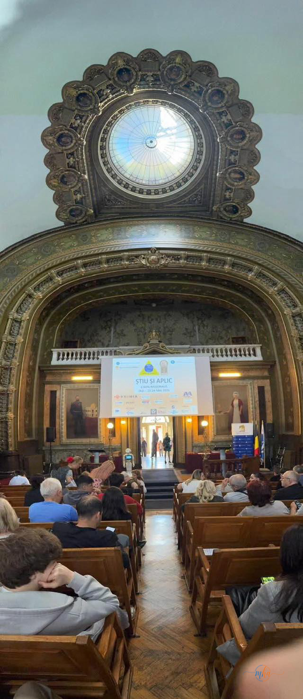
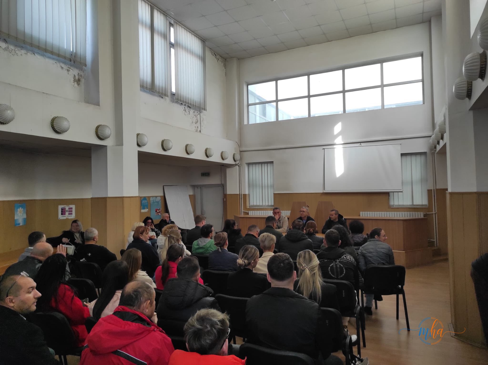

Județul Mehedinți are motive de mândrie! În perioada 22-24 mai 2026, la Iași, s-a desfășurat etapa națională a concursului „Știu și Aplic" — cel mai important proiect educațional din România dedicat securității și sănătății în muncă pentru elevi de liceu și școli profesionale. Iar mehedințenii au urcat pe cea mai înaltă treaptă a podiumului național!
🏆 Laureații mehedințeni — etapa națională Iași 2026
Ce este concursul „Știu și Aplic"?
Concursul „Știu și Aplic" este un proiect educațional național axat pe domeniul securității și sănătății în muncă (SSM), organizat de Inspecția Muncii prin inspectoratele teritoriale de muncă din județe, în colaborare cu inspectoratele școlare județene. Titlul complet al campaniei este: „Securitatea și sănătatea în muncă se învață în școală și se aplică toată viața".

Foto: Etapa națională a concursului „Știu și Aplic" — Iași, 22-24 mai 2026
Scopul acestei campanii este cultivarea unei mentalități proactive față de prevenirea riscurilor profesionale încă de pe băncile școlii, pregătind viitorii profesioniști pentru o integrare sigură și sănătoasă pe piața muncii. Concursul se adresează elevilor din licee și școli profesionale și are mai multe secțiuni în funcție de profilul și nivelul de studiu.
ITM Mehedinți — partener în proiect
Inspectoratul Teritorial de Muncă Mehedinți este partener în proiectul educațional „Știu și Aplic" și a coordonat participarea echipajelor mehedințene la toate etapele competiției. Instituția apreciază și felicită succesul elevilor din județ, care au demonstrat că pregătirea riguroasă și înțelegerea profundă a normelor de securitate și sănătate în muncă pot aduce performanțe de excepție la nivel național.

Foto: Activitate de pregătire organizată de ITM Mehedinți în cadrul proiectului „Știu și Aplic"
Participarea la etapele locale și județene ale concursului, sub coordonarea ITM Mehedinți, i-a pregătit temeinic pe elevi pentru provocările etapei naționale. Cunoștințele teoretice dobândite în cadrul orelor de specialitate, combinate cu exercițiile practice privind identificarea și prevenirea riscurilor profesionale, s-au dovedit a fi o bază solidă pentru performanța de nivel național.
„Inspectorul Teritorial de Muncă Mehedinți apreciază succesul elevilor mehedințeni care au obținut rezultate remarcabile în cadrul campaniei naționale a concursului «Știu și Aplic»." — ITM Mehedinți
De ce contează educația în securitatea muncii?
Securitatea și sănătatea în muncă nu este doar o obligație legală pentru angajatori — este o cultură preventivă care trebuie cultivată de timpuriu. Prin implicarea elevilor din licee și școli profesionale în astfel de proiecte, România investește în formarea unor viitori angajați responsabili, capabili să recunoască riscurile la locul de muncă și să aplice măsurile de protecție corecte înainte ca accidentele să se producă.
Concursul „Știu și Aplic" joacă un rol esențial în această direcție, transformând noțiunile abstracte din manuale în competențe practice și atitudini proactive. Premiul I obținut de elevii Colegiului Național Traian demonstrează că județul Mehedinți produce tineri bine pregătiți, capabili să concureze și să câștige în fața colegilor din întreaga țară.
Felicitări campionilor!
Redacția MehedintiAzi.ro se alătură comunității mehedințene în felicitarea celor patru elevi laureați — Mergeani Mihai, Minculescu Daria, Diculeșcu Darius și Săvescu Mihaela — și a profesorilor coordonatori care i-au pregătit pentru această performanță. Felicitări de asemenea ITM Mehedinți pentru coordonarea proiectului și Colegiului Național Traian și Liceului Tehnologic Domnul Tudor pentru rezultatele de excepție obținute la etapa națională!